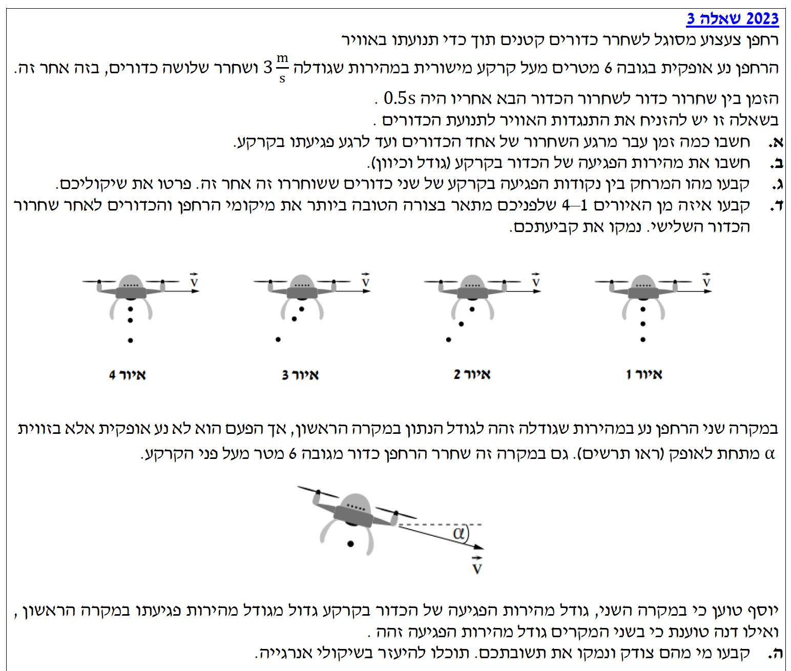
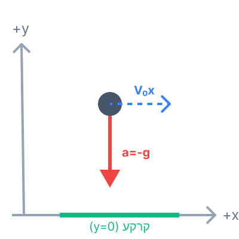
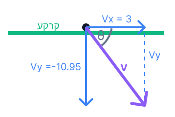
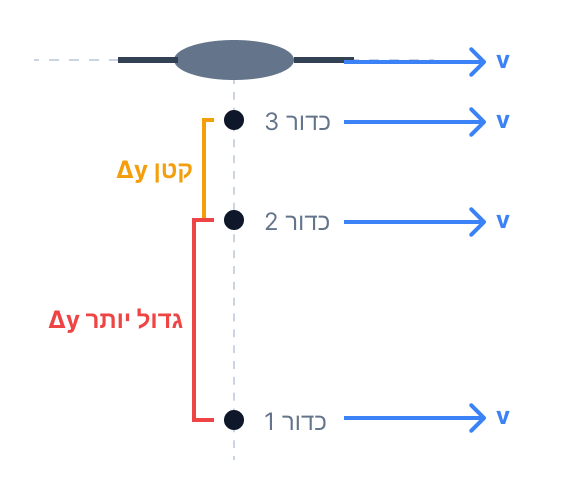

מכניקה 2023 - שאלה 3
קינמטיקה וזריקה אופקית, אנרגיה מכנית
עודכן:
--- --:--:--

[תמונת השאלה המקורית]
לא נמצאה תמונה בשם question-image.png באותה תיקייה.
הגדרת מערכת הצירים לשאלה
לפני שנתחיל, נגדיר מערכת צירים ברורה שתשמש אותנו לאורך כל הפתרון. נמקם את ראשית הצירים (נקודת האפס, \( y=0, x=0 \)) בקרקע, בדיוק מתחת לנקודת השחרור של הכדור הראשון. ציר ה-\( y \) חיובי כלפי מעלה, וציר ה-\( x \) חיובי ימינה (בכיוון תנועת הרחפן).
מכיוון שציר ה-\( y \) מכוון כלפי מעלה, תאוצת הכובד פועלת נגד כיוון הציר, ולכן תאוצת הכדורים באוויר היא: \( a_y = -g = -10 \text{ m/s}^2 \).
סעיף א': זמן מעוף הכדור
1. מה נתון:
- גובה התחלתי: כדור משוחרר מגובה \( y_0 = 6 \text{ m} \).
- גובה סופי (קרקע): \( y = 0 \text{ m} \).
- מהירות תחילית של הרחפן: \( v_0 = 3 \text{ m/s} \) בכיוון אופקי.
- מהירות תחילית אנכית של הכדור: מכיוון שהרחפן נע אופקית בלבד, מהירות השחרור בציר האנכי היא אפס \( v_{0y} = 0 \text{ m/s} \).
- תאוצה: גוף בנפילה חופשית (זריקה אופקית) נע בתאוצת הכובד כלפי מטה. לכן \( a_y = -g = -10 \text{ m/s}^2 \).
2. מה מחפשים:
את הזמן \( t \) שעובר מרגע השחרור ועד שהכדור פוגע בקרקע.
תרשים קינמטי לכדור באוויר

לא נמצאה התמונה image-1.png
3. נוסחאות בשימוש (מדף הנוסחאות):
תנועה שוות תאוצה (מקום-זמן): \(y = y_0 + v_{0y} t + \frac{1}{2}a_y t^2\)
4. הצבה ופתרון:
נציב את הנתונים הקינמטיים בנוסחת מקום-זמן עבור ציר \( y \) (נפילה חופשית):
\[ y(t) = y_0 + v_{0y}t + \frac{1}{2}a_y t^2 \]
\[ 0 = 6 + 0 \cdot t + \frac{1}{2}(-10) t^2 \]
\[ 0 = 6 - 5t^2 \]
\[ 5t^2 = 6 \]
\[ t^2 = \frac{6}{5} = 1.2 \]
\[ t = \sqrt{1.2} \approx 1.095 \text{ s} \]
זמן מעוף הכדור עד הפגיעה בקרקע הוא \( t \approx 1.095 \text{ s} \).
שימו לב לעיקרון אי-התלות של גליליי: התנועה האופקית של הרחפן אינה משפיעה כלל על זמן הנפילה האנכית! זמן הנפילה של כדור המשוחרר מרחפן נע אופקית זהה לחלוטין לזמן הנפילה של כדור שמופל ממנוחה מאותו הגובה.
סעיף ב': מהירות הפגיעה בקרקע
1. מה נתון:
- זמן הנפילה שחישבנו: \( t = \sqrt{1.2} \approx 1.095 \text{ s} \).
- תאוצה אופקית: אין כוחות בציר האופקי, ולכן \( a_x = 0 \).
- מהירות אופקית תחילית: \( v_{0x} = 3 \text{ m/s} \).
- תאוצה אנכית: \( a_y = -10 \text{ m/s}^2 \).
2. מה מחפשים:
את וקטור מהירות הפגיעה בקרקע, הכולל גם את גודל המהירות וגם את כיוונה (זווית פגיעה).
וקטורי המהירות ברגע הפגיעה

לא נמצאה התמונה image-2.png
3. נוסחאות בשימוש:
תנועה שוות תאוצה (מהירות-זמן): \(v = v_0 + at\)
משפט פיתגורס (לגודל וקטור): \(|\vec{v}| = \sqrt{v_x^2 + v_y^2}\)
טריגונומטריה (לכיוון): \(\tan(\theta) = \frac{v_y}{v_x}\)
4. הצבה ופתרון:
נחשב את רכיבי המהירות בכל ציר ברגע הפגיעה:
ציר \( x \) (אופקי): התאוצה היא אפס, לכן המהירות נשארת קבועה לאורך כל התנועה.
\[ v_x = v_{0x} = 3 \text{ m/s} \]
ציר \( y \) (אנכי): המהירות ההתחלתית היא אפס, והתאוצה היא \( -10 \text{ m/s}^2 \).
\[ v_y(t) = v_{0y} + a_y t \]
\[ v_y = 0 - 10 \cdot \sqrt{1.2} \approx -10.95 \text{ m/s} \]
כעת, נמצא את גודל המהירות הכוללת באמצעות חיבור וקטורי (פיתגורס):
\[ |\vec{v}| = \sqrt{v_x^2 + v_y^2} \]
\[ |\vec{v}| = \sqrt{3^2 + (-10.95)^2} = \sqrt{9 + 120} = \sqrt{129} \approx 11.36 \text{ m/s} \]
נמצא את כיוון המהירות (הזווית \( \theta \) ביחס לציר האופקי החיובי):
\[ \tan(\theta) = \frac{v_y}{v_x} = \frac{-10.95}{3} = -3.65 \]
\[ \theta = \arctan(-3.65) \approx -74.68^\circ \]
גודל מהירות הפגיעה בקרקע הוא \( 11.36 \text{ m/s} \).
כיוון הפגיעה הוא בזווית של \( 74.68^\circ \) מתחת לאופק.
זכרו שמהירות היא וקטור! כאשר מבקשים "מהירות" בבגרות, חובה לחשב גם את הגודל וגם את הכיוון. הסימן השלילי של המהירות בציר y והסימן השלילי של הזווית מציינים שהכדור נע כלפי מטה, כפי שבחרנו במערכת הצירים שלנו.
סעיף ג': המרחק בין נקודות הפגיעה
1. מה נתון:
- פרק הזמן בין שחרור כדור אחד למשנהו: \( \Delta t = 0.5 \text{ s} \).
- המהירות האופקית של כל כדור מרגע עזיבתו היא קבועה ושווה למהירות הרחפן: \( v_x = 3 \text{ m/s} \).
2. מה מחפשים:
את המרחק האופקי \( \Delta X \) על הקרקע בין נקודת הפגיעה של כדור אחד לבין נקודת הפגיעה של הכדור ששוחרר אחריו.
3. נוסחאות בשימוש:
תנועה שוות מהירות (בציר x): \(x = x_0 + v_x t\) או במקרה של הפרשים: \(\Delta x = v_x \cdot \Delta t\)
4. הסבר מילולי, הצבה ופתרון:
מכיוון שאין התנגדות אוויר, כל כדור שומר על המהירות האופקית של הרחפן (\( 3 \text{ m/s} \)) לאורך כל מעופו. מכאן נובע שלשני הכדורים יש העתק אופקי זהה מרגע השחרור ועד הפגיעה בקרקע.
הכדור השני משוחרר בפיגור זמן של \( 0.5 \text{ s} \) ביחס לכדור הראשון. בזמן הזה, הרחפן (ולמעשה נקודת השחרור באוויר) התקדם אופקית מרחק מסוים. מכיוון שהמעוף האנכי שלהם זהה לחלוטין באורכו (אותו גובה, לכן אותו זמן נפילה), המרחק האופקי ביניהם בקרקע שווה בדיוק למרחק האופקי שהרחפן עבר בפרק הזמן שבין השחרורים.
\[ \Delta X = v_x \cdot \Delta t \]
\[ \Delta X = 3 \text{ m/s} \cdot 0.5 \text{ s} = 1.5 \text{ m} \]
המרחק בין נקודות הפגיעה בקרקע של שני כדורים עוקבים הוא \( 1.5 \text{ m} \).
חשבו על זה כך: הכדורים משוחררים מנקודות הנמצאות במרחק אופקי של \( 1.5 \text{ m} \) זו מזו. מכיוון שהמסלול שלהם באוויר זהה לחלוטין (אותה מהירות אופקית ואותה תאוצה אנכית), המרחק האופקי הזה נשמר ביניהם לאורך כל התנועה. לכן, גם נקודות הנחיתה שלהם יהיו בדיוק במרחק של \( 1.5 \text{ m} \) אחת מהשנייה.
סעיף ד': בחירת האיור הנכון
1. ניתוח פיזיקלי של תנועת הכדורים והרחפן:
כדי לבחור את האיור הנכון, עלינו לבחון את תנועת הכדורים בשני הצירים, ביחס לרחפן הממשיך בתנועתו:
- בציר האופקי (x): כפי שהזכרנו בסעיף קודם, בהיעדר התנגדות אוויר, המהירות האופקית של כל כדור שווה למהירות הרחפן (\( v_x = 3 \text{ m/s} \)) ואינה משתנה. מכיוון שהרחפן והכדורים נעים באותה מהירות אופקית, הם יעברו מרחקים אופקיים זהים באותו פרק זמן. המשמעות הוויזואלית היא שבכל רגע נתון, כל הכדורים נמצאים בדיוק על אותו אנך מתחת לרחפן. מסקנה זו פוסלת מיד את איורים 2 ו-3, בהם הכדורים מפגרים מאחורי הרחפן בציר האופקי.
- בציר האנכי (y): בציר זה מתקיימת תנועה שוות תאוצה מטה בגלל כוח הכובד. על פי הנוסחה \( \Delta y = \frac{1}{2}g t^2 \) (ההעתק האנכי כפונקציה של הזמן), המרחק שהכדור נופל גדל ביחס ריבועי לזמן.
- הכדור התחתון ביותר (הראשון ששוחרר) נופל במשך הזמן הרב ביותר, ולכן מהירותו האנכית היא הגבוהה ביותר.
- הכדור האמצעי שוחרר אחריו, ולכן נפל פחות זמן.
- המרחק שעובר כדור בפרק זמן מסוים גדל ככל שמהירותו גדלה. לכן, המרחק בין הכדור הראשון (שמהירותו האנכית גבוהה יותר) לכדור השני, יהיה גדול יותר מהמרחק שבין הכדור השני לכדור השלישי (שרק שוחרר). מסקנה זו פוסלת את איור 1, המציג מרווחים שווים בין הכדורים (מצב שמתאים למהירות אנכית קבועה). איור 4 מציג בדיוק את המצב הנכון - מרווחים אנכיים ההולכים וגדלים.
המחשה של איור 4 (האיור הנכון)

לא נמצאה התמונה image-4.png
איור 4 הוא האיור הנכון המתאר נכונה את המצב.
סעיף ה': דיון בשיקולי אנרגיה (יוסף מול דנה)
1. מה נתון במקרה החדש:
- גודל המהירות ההתחלתית של הרחפן (והכדור) נשאר זהה למקרה הראשון: \( |\vec{v_0}| = 3 \text{ m/s} \).
- גובה השחרור נשאר זהה: \( h = 6 \text{ m} \).
- ההבדל: כיוון המהירות ההתחלתית אינו אופקי, אלא בזווית \( \alpha \) כלפי מטה.
2. טענות התלמידים:
יוסף טוען: גודל מהירות הפגיעה כעת גדול יותר מאשר במקרה הראשון.
דנה טוענת: גודל מהירות הפגיעה זהה בשני המקרים.
3. חוקי הפיזיקה הרלוונטיים (שיקולי אנרגיה):
מבקשים מאיתנו להשתמש בשיקולי אנרגיה. מאחר ומזניחים את התנגדות האוויר, הכוח היחיד שעושה עבודה על הכדור בזמן מעופו הוא כוח הכובד (כוח משמר). לכן, האנרגיה המכנית הכוללת של הכדור נשמרת.
נוסחאות בשימוש:
אנרגיה קינטית: \(E_k = \frac{1}{2}mv^2\)
אנרגיה פוטנציאלית כובדית: \(U_g = mgh\)
חוק שימור אנרגיה מכנית: \(E_{initial} = E_{final}\)
4. ניתוח ופתרון:
נרשום את משוואת שימור האנרגיה עבור הכדור מנקודת השחרור ועד הקרקע. נקבע את מישור הייחוס לאנרגיה פוטנציאלית (\( h=0 \)) בקרקע.
האנרגיה ההתחלתית (ברגע השחרור): מורכבת מאנרגיה פוטנציאלית כובדית (בגובה \( h \)) ואנרגיה קינטית. שימו לב! אנרגיה קינטית היא סקלר, והיא תלויה בגודל המהירות בריבוע (\( v^2 \)), ולא בכיוונה!
\[ E_{initial} = U_g + E_k = mgh + \frac{1}{2}mv_0^2 \]
האנרגיה הסופית (רגע לפני הפגיעה בקרקע): הגובה הוא אפס, ולכן יש רק אנרגיה קינטית, כאשר \( v_f \) הוא גודל מהירות הפגיעה ששואלים עליה.
\[ E_{final} = \frac{1}{2}mv_f^2 \]
נשווה בין המצבים (על פי חוק שימור האנרגיה):
\[ mgh + \frac{1}{2}mv_0^2 = \frac{1}{2}mv_f^2 \]
ניתן לצמצם במסה \( m \), ונקבל ביטוי עבור גודל מהירות הפגיעה הריבועית:
\[ v_f^2 = 2gh + v_0^2 \implies v_f = \sqrt{2gh + v_0^2} \]
כפי שניתן לראות מהמשוואה שפיתחנו, גודל מהירות הפגיעה בקרקע (\( v_f \)) תלוי אך ורק בגובה ההתחלתי (\( h \)) ובגודל המהירות ההתחלתית (\( v_0 \)). הוא אינו תלוי בזווית השחרור (\( \alpha \)).
מכיוון שבשני המקרים (גם בזריקה האופקית וגם בזריקה בזווית), גובה השחרור (\( 6 \text{ m} \)) וגודל המהירות ההתחלתית (\( 3 \text{ m/s} \)) הם זהים לחלוטין, האנרגיה המכנית הכוללת ההתחלתית זהה. לכן, גם האנרגיה הקינטית הסופית תהיה זהה, וכפועל יוצא – גודל המהירות הסופית יהיה זהה בשני המקרים.
דנה צודקת. גודל מהירות הפגיעה בקרקע שווה בשני המקרים, כיוון שהאנרגיה המכנית ההתחלתית תלויה רק בגודל המהירות ובגובה (הזהים בשני המקרים) ולא בכיוון הזריקה.
זו מלכודת קלאסית! לעיתים תלמידים חושבים שאם "זרקנו למטה", הכדור יפגע חזק יותר. בעוד שזמן המעוף אכן יהיה קצר יותר (כי ניתנה לו מהירות אנכית התחלתית כלפי מטה), עקרון שימור האנרגיה מוכיח באופן אלגנטי ופשוט שהמהירות הכוללת בגודלה תהיה זהה, פשוט זווית הפגיעה תהיה שונה. אנרגיה, בהיותה גודל סקלרי, מפשטת עבורנו את החישוב ומייתרת ניתוח וקטורי מורכב של כיוונים בסעיף זה.